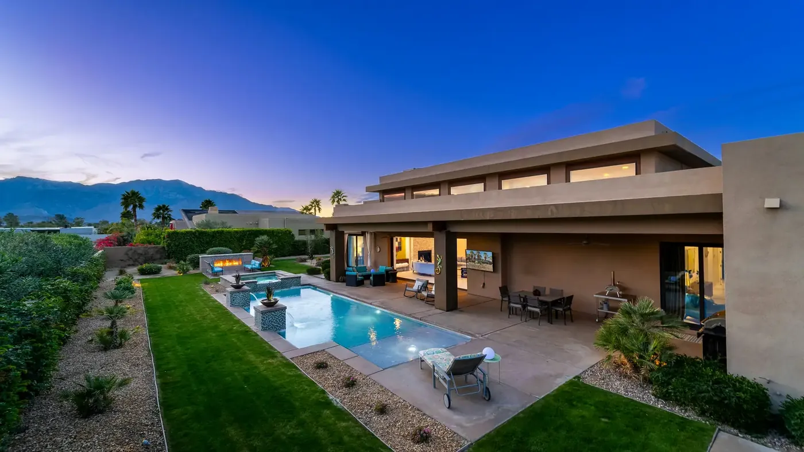

Buying
Nine steps from first search to keys, and an honest read on which of the ten communities actually fits how you want to spend a Saturday.
The buyer’s guideTwo decades selling North Scottsdale, and ten communities inside it she knows street by street.
Who you would be working with
Licensed since 2004 and full time ever since. Around thirty transactions a year, more than $35 million closed in the last three, and over a hundred five-star reviews behind it.
What she is known for is not volume. It is that she picks up. Calls, texts and emails get answered the same day, and clients who bought with her ten years ago call her again when it is time to sell.
More about KathyTwo minutes
How Kathy works, what she does for a listing, and why her clients keep calling back.
Start a conversation
Nine steps from first search to keys, and an honest read on which of the ten communities actually fits how you want to spend a Saturday.
The buyer’s guide
Sotheby’s International Realty reach, plus the postcards, pop-bys and local collaborations Kathy runs herself. Both matter.
The seller’s guideChosen for the same reason: golf, courts, trails, and neighbors who are outside using them. Kathy sells across Scottsdale and the north valley. These ten are simply the ones she can walk you through street by street.
Tap any community for what it is actually like to live there. Looking somewhere else in the valley? Ask her anyway.
Explore the communitiesTroon North sits in far north Scottsdale near Pinnacle Peak Park, where the High Sonoran Desert is at its most theatrical. Giant saguaros, granite boulder formations and long sightlines across the valley set the tone for the whole community.
The neighborhood is built around Troon North Golf Club and its two desert courses. Lots run large and density stays low, so homes sit apart from one another rather than shoulder to shoulder. Architecture leans southwestern and contemporary desert. Trailheads for hiking and mountain biking are minutes from most front doors.
DC Ranch runs along the base of the McDowell Mountains and is one of the most recognized master-planned communities in north Scottsdale. It is organized as a set of villages rather than a single tract, which is why the architecture varies so much from one street to the next.
Housing spans custom homes, single-family neighborhoods and luxury townhomes. Market Street is the community's own main street, with shops and restaurants inside the community rather than a drive away. Residents have community centers, pools, tennis, and direct access to desert trails, and private golf sits within the community boundary.
Desert Highlands sits just south of Pinnacle Peak in the 85255 zip code. The site plan is environmentally sensitive by design: natural desert landscaping is retained rather than replaced, and architectural controls are strict, which is why the community reads as a single considered piece rather than a collection of individual statements.
Ownership here is unusual. Buying a property carries mandatory club membership rights in the Desert Highlands Country Club, so the club is not an optional add-on. That gives access to the 18-hole Jack Nicklaus championship course, an 18-hole putting course, thirteen tennis courts across grass, clay and hard surfaces, a fitness center and club dining. Homes are custom estates and hillside villas.
Grayhawk is one of north Scottsdale's most established communities and one of its most varied. Guard-gated luxury subdivisions sit alongside standard single-family neighborhoods and resort-style condominiums, so the entry point into Grayhawk is much wider than its reputation suggests.
Grayhawk Golf Club anchors the community with two championship courses, the Raptor and the Talon, both open to the public rather than members only. Greenbelts, pocket parks and walking paths thread through the neighborhoods. Grayhawk lies within the Paradise Valley Unified School District.
Kierland sits along the north Scottsdale corridor and is built on a live, work and play premise. Two of the valley's best-known outdoor shopping districts, Kierland Commons and Scottsdale Quarter, are directly walkable from much of the community.
Housing runs the full range: low-maintenance luxury apartments, high-rise condominiums, single-family suburban homes and golf course residences. For buyers who want to leave the car parked, this is the most genuinely walkable option in north Scottsdale.
Old Town is the cultural, dining and shopping heart of Scottsdale, and the only part of the city where walkability is the headline rather than a bonus. Art galleries, nightlife, local boutiques and Scottsdale Fashion Square are all within the district.
Housing here is unlike anywhere else in the city: modern luxury mid-rise condominiums and townhomes sit alongside historic single-story ranch homes, sometimes on the same block. It suits buyers who want to be in the middle of things rather than looking at the desert.
Thinking about selling
Get an instant estimate on your Scottsdale home in about a minute. It is a starting point, not a listing price.
When you want the real one, Kathy walks the house, looks at what is actually competing with it right now, and puts a full market analysis in front of you.
Get your estimate
In their words

★★★★★
Kathy did a wonderful job helping our family sell our father’s house. It is never easy working with three siblings who all live out of state, but she handled everything flawlessly while meeting each of our individual needs. We were selling during a time when homes were not moving quickly, and Kathy never gave up. She continually held open houses, actively marketed the property, and kept us informed every step of the way.

★★★★★
I asked her to find me a home away from the ruckus of commotion, traffic and lights. Kind of in the boonies, but not so far that shopping, medical care and entertainment were out of reach. Kathy found me just what I was looking for. Quiet, with beautiful views in every direction. She was skillful in negotiating a super deal that I am really happy with.
Whether that is what a street is really like at 6pm or what your home would list for this spring, Kathy answers her own phone.
Get in touch